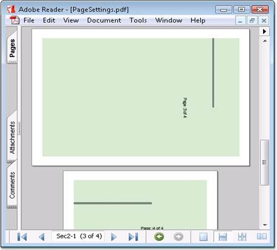

Essential PDF supports various page settings options that control the page display. They are as follows.
· Page orientation
· Page size
· Page layout
· Page mode
· Page scale
· Page transition
Some of the page sizes supported are as follows:
· A0 to A9
· B0 to B5
· ArchA to ArchE
· Half Letter
· Ledger
· Letter
· Legal
· Note
· Letter11x17
Some of the page layouts supported are as follows:
· OneColumn
· SinglePage
· TwoColumnLeft
· TwoColumnRight
· TwoPageRight
· TwoPageLeft
Some of the page modes supported are as follows:
· Full screen
· UseAttachment.UseNone
· UseOC
· UseOutlines
· UseThumbs
When a print dialog is displayed for a document, the values to be selected for the page scaling option are as follows:
· None-Indicates that the print dialog should reflect no page scaling
· AppDefault-Indicates that applications should use the current print scaling.
 Note: If this entry has an unrecognized value,
applications should use the current print scaling. The default value is
AppDefault.
Note: If this entry has an unrecognized value,
applications should use the current print scaling. The default value is
AppDefault.
The following code snippets illustrate the various page settings.
|
[C#]
// To set landscape page orientation. doc.PageSettings.Orientation = PdfPageOrientation.Landscape;
// To set UseOC page Mode. doc.ViewerPreferences.PageMode = PdfPageMode.UseOC;
// Setting pagescale option as None doc.ViewerPreferences.PageScaling = PageScalingMode.None;
// To set two column left page layout. doc.ViewerPreferences.PageLayout = PdfPageLayout.TwoColumnLeft;
//Sets page transition. doc.PageSettings.Transition.PageDuration = 1; doc.PageSettings.Transition.Duration = 1; |
|
[VB.NET]
' To set landscape page orientation. doc.PageSettings.Orientation = PdfPageOrientation.Landscape
' To set UseOC page Mode. doc.ViewerPreferences.PageMode = PdfPageMode.UseOC
' Setting pagescale option as None doc.ViewerPreferences.PageScaling = PageScalingMode.None
' To set two column left page layout. doc.ViewerPreferences.PageLayout = PdfPageLayout.TwoColumnLeft
'Sets page transition. doc.PageSettings.Transition.PageDuration = 1 doc.PageSettings.Transition.Duration = 1 |

Figure 54: Page Settings
Viewer Preference Settings
Essential PDF supports Viewer Preference options for the pdf pages such as hiding toolbar, hiding menubar and hiding window UI. The HideToolbar, HideMenuBar and HideWindowUI properties can be used for enabling these features. The following code example illustrates this.
|
[C#]
//To hide the viewer application's Tool bar doc.ViewerPreferences.HideToolbar = true;
//To hide the viewer application's Menu bar doc.ViewerPreferences.HideMenubar = true;
//To hide the user interface elements such as Scroll bar, navigation controls doc.ViewerPreferences.HideWindowUI = true |
|
[VB.NET]
'To hide the viewer application's Tool bar doc.ViewerPreferences.HideToolbar = True
'To hide the viewer application's Menu bar doc.ViewerPreferences.HideMenubar = True
'To hide the user interface elements such as Scroll bar, navigation controls doc.ViewerPreferences.HideWindowUI = True |
Sample Location
A sample which demonstrates the PDF Page Settings is available in the following sample installation location:
<Install Location>\Windows\Pdf.Windows\Samples\2.0\Settings\Page Settings